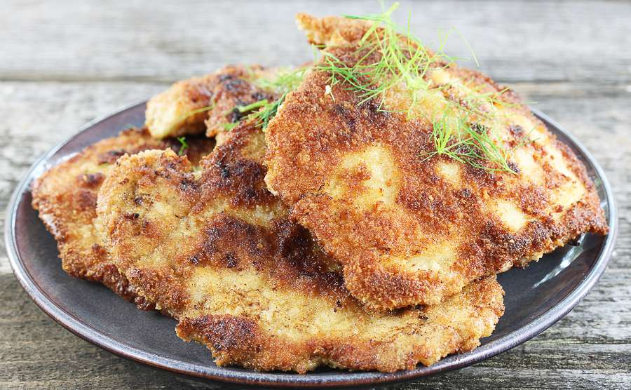

Blok kulinarny Maksa
Blok kulinarny Maksa
Proste i super przepisy na jedzenie
Aktualna strona: Dania mięsne
Kotlet Schabowe
Czas przygotowania: 1h
Poziom trudności: łatwe
Dla 3 osób
To mój najlepszy i bardzo prosty sposób na przyrządzenie idealnych
kotletów schabowych!
